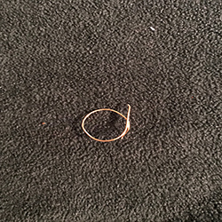

Rings
September 15th, 2017
How to Design Simple Rings
These are some very basic rings that are seen often and sold in many accessory stores. I had purchased one about a year ago and lost it. Instead of going out and buying another one I decided to figure it out myself and make one. I mean its only wire, how hard could it be? By following these step by step instructions the answer to that question is its pretty easy.
Materials
Plyers
Wire Cutters
Accent Piece (Small Charm)
A Mold
Super Gule (If you Feel Nessassary)
Step By Step For a Simple Ring
1. Cut off an apporiate amount of wire. I usually cut a good amount becuase I know I am going to end up cutting it anyways.

2. Take the mould and wrap the wire around it in the spot you would like to designate is similar in size to your finger. What I do is just fold it aorund my finger because my wire is not as thick.
3. Now take the back side of the ring, this is where the excess wire is located and cut it down leaving just a small bit to wrap in a circle.

4. Once cut then wrap the little bit left into small circles. This is where you can superglue if you feel is nessessary.


5. I like to put the ring in circles this way it is adjustable, somedays I feel as though I can be bloated. That might be just me though.

Tips
Wire! Wire is a hard material to work with. It can be very sharp and at times can be tough to use if you buy one too thick. I was at the craft store sitting on the floor trying to figure out what size I prefered. I ended up going with a very small wire in thickness.